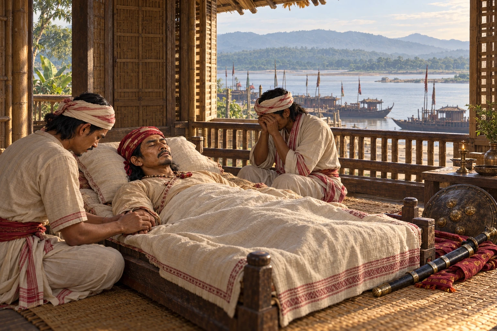

Death of Lachit Borphukan at Kaliabor
April 1672 · Against the Mughal Empire

About a year after Saraighat, Lachit Borphukan dies of illness at Kaliabor. Udayaditya Singha builds the Lachit Maidam at Hoolungapara and makes Lachit's brother Laluk Sola the new Borphukan.
Death date given as 25 April 1672 in some sources. Deathbed composition is illustrative, not an eyewitness record.
People: Lachit Borphukan, Udayaditya Singha (Sunyatphaa), Laluk Sola Borphukan
Open this scene in the interactive archive · Follow this event on MAP